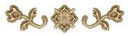
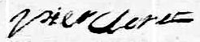

 On
peut dire en gros: Évidemment, je parle ici pour notre lignée, car de nombreuses autres lignées ont vu une évolution différente de leur nom de famille. |
|
Le monument funéraire de notre famille, placé sur
le lot familial du cimetière de la Côte-des-Neiges de Montréal, a été acheté par Alphonse Charrette
(huitième génération) au début du 20ème siècle. On y voit bien,
ainsi que dans différents autres
documents que nous possédons, que le nom s'écrit alors avec deux
"r".
|
|
Voici un extrait de l'introduction de la Généalogie des Charette
de Frère Jean-Benoît Charette.
"Mais comment Chauré est-il devenu Charette en passant par Choret - Chauret - Charest- Chaurette? Seuls l'acte de mariage rédigé par l'abbé Prévost de la paroisse Sainte-Marguerite, à La Rochelle, et le contrat de mariage chez le notaire Pierre Teuleron portent le nom de Chauré. Les Relations des Jésuites citent ce nom à plusieurs endroits. Les Français, ceux de Charente, dans le cas qui nous concerne, ont une tendance naturelle à convertit l"e" fermé en "e"ouvert par l'addition du "t" accentué. L'énergie
labiale nécessaire pour donner un son final clair et compréhensif n'a
jamais été chez les Canadiens une vertu, ni même une qualité.
Un moyen plus facile a rendu la prononciation de cette syllabe
intelligible : on double la consonne finale et l' "e"
muet vient s'y coller. Alors nous avons toutes ces doublures très
rares en "ienne" ou en "onne", mais si fréquentes
et "otte" comme Massicot = Massicotte, Jeannot = Jeannotte,
Turcot = Turcotte, Picot = Picotte, et en "ette" comme Morisset = Morissette, Forget = Forgette, Choquet = Choquette, Binet =
Binette. Une explication qui ne manque pas d'à-propos est celle qui dérive de l'inaptitude de la plupart des ancêtres à lire et à écrire. Le notaire, le prêtre ou le fonctionnaire écrivait les noms comme il les entendait. Lecture faite de l'acte, les parties contractantes déclaraient souvent ne pas savoir signer et implicitement ne pas savoir lire. Donc impossible d'exercer un contrôle sur l'orthographe des noms propres et du reste. C'est vraiment un curieux phénomène de constater le massacre des mots le plus en usage à la lecture de certains vieux documents officiels. Le scrupule linguistique ne logeait pas à l'enseigne de tous les presbytères, ni de toutes les officines publiques. L'orthographe était très flottante, ..." (ne fait-on pas le même reproche aux gens qui "chattent" sur Internet aujourd'hui?) |
 Au sujet de la quatrième génération, nous devrions probablement écrire
Pierre et Joseph Chauret, et
non plus Choret. En consultant les documents
originaux, actes de baptême, de mariage, de sépulture, et les actes
notariés, on trouve une variété de façon d'écrire notre nom de famille.
Cela varie selon le prêtre, ou le notaire, qui rédige l'acte.
Au sujet de la quatrième génération, nous devrions probablement écrire
Pierre et Joseph Chauret, et
non plus Choret. En consultant les documents
originaux, actes de baptême, de mariage, de sépulture, et les actes
notariés, on trouve une variété de façon d'écrire notre nom de famille.
Cela varie selon le prêtre, ou le notaire, qui rédige l'acte.